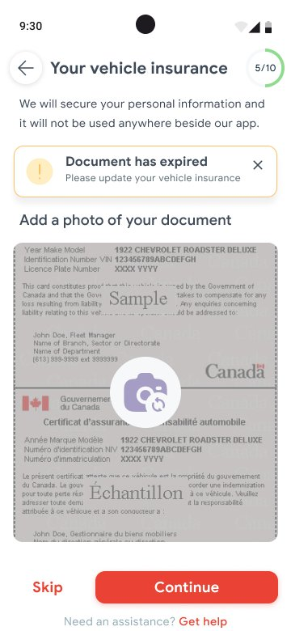
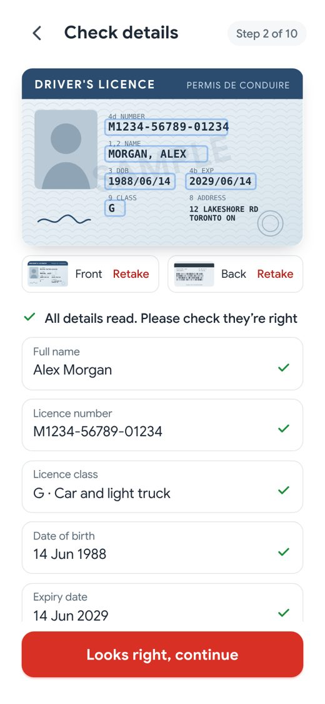
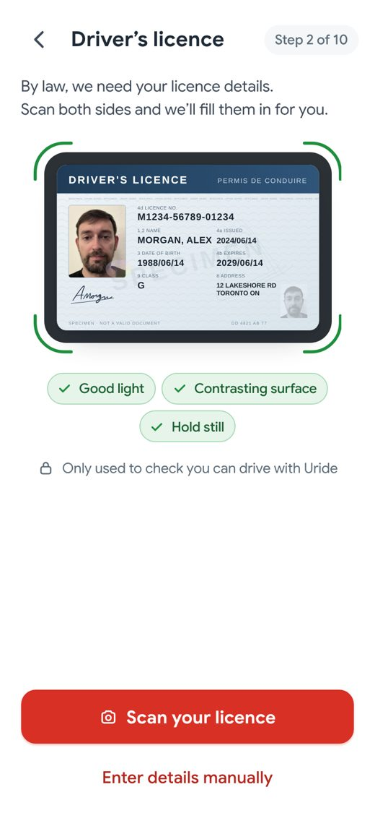
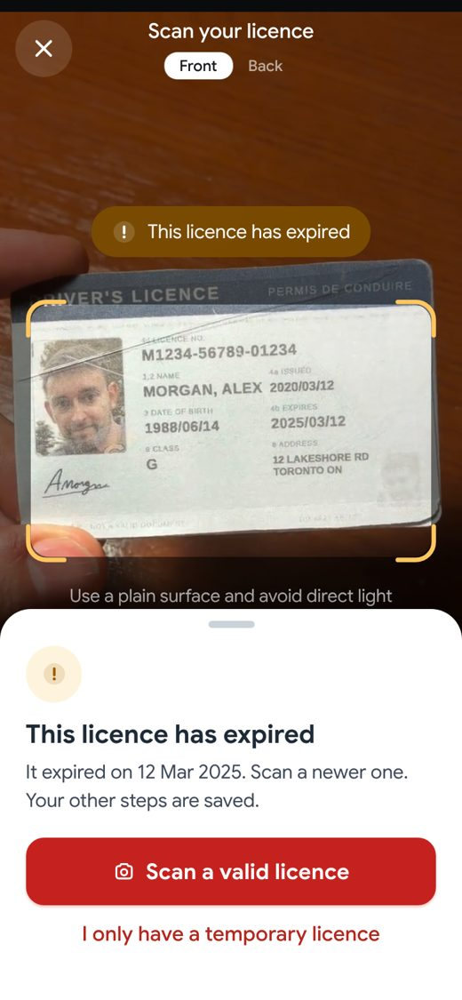
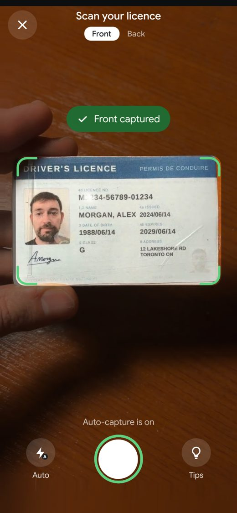
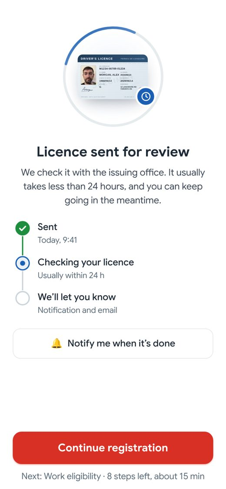

Driver’s licence scan: from a 2024 screen to a working prototype
Uride driver onboarding, step 2 of 10. I took the step I shipped in 2024 and prototyped it in code, on real iPhone footage of a printed specimen card, to work out the motion, the timing and the edge cases. Built with Claude Code; the decisions and the direction are mine.
Where it started



Looked right in a screenshot
The first version came straight from my brief. Every screen was there, but in motion it fell apart:
- Too fast and jumpy: the card flew in, statuses changed faster than you could read them.
- Every state announced: “Hold still”, “Great, now flip it over”, haptic labels on screen.
- No rule for problems: what stops the flow, what waits for review, which colour means what.
- A drawn card, so glare, blur and an expired licence were only claims.



What I changed, and why
One rule for messages
The camera speaks only for an action, a problem or a result. Problems are amber, a taken photo is green, nothing in between. The Front/Back switch says where you are, so the pill doesn’t.
Stop only when going on is pointless
Expiry is read on-device right after the front photo, so nobody flips a card we can’t accept. Anything fixable in a second waits for one review screen.
Fix it first, retake as a fallback
A trace of glare hid one character. Typing it is faster than shooting again: the character is pre-selected and the number keypad opens. Retake stays one tap away.
Calm, honest motion
Nothing that stays the same moves. Each tip is highlighted while it is shown, never ticked: a tip is not a check. The shutter ring never rewinds. A status changes in place: colour eases, the badge draws itself.
Real footage, real problems
One take on an iPhone: an expired card, a swap, lamp glare, both sides. The back is read too: the barcode cross-checks the front.
Less to read under stress
One sentence per line, one-line hints, a two-line expired sheet that ends with “Your other steps are saved”. Status messages are announced to VoiceOver.
Five rules behind every screen
Every animation in the prototype follows the same rules and uses the same tokens, so they can move straight into a design system.
- Motion explains a change, it never decorates. If nothing changed, nothing moves. On the checklist only the updated step changes colour and the counter rolls.
- Enter calm, leave fast. Arrivals decelerate over about 550–700 ms, exits accelerate in about 250 ms.
- Springs without bounce for screens and sheets. A little bounce only as a reward: a tick, a status badge.
- Nothing rewinds. The capture ring fades and resets instead of spinning back.
- Readable before it moves on. Messages stay at least 4 seconds (1.5 s + 350 ms per word) and close on tap. Nothing loops.
Motion tokens
| Token | Value | Used for |
|---|---|---|
| press | 100 ms ease-out | Touch down, always under 100 ms |
| release | spring 350 ms · 0.2 | Button comes back |
| push | spring 550 ms · 0 | Screen push and back |
| sheet | spring 600 ms · 0 | Camera, bottom sheets |
| settle | spring 700 ms · 0 | Card comes to rest in the frame |
| snap | spring 450 ms · 0.15 | Frame corners lock on |
| pop | spring 400 ms · 0.25 | Ticks, status icons, badges |
| toast | spring 550 ms · 0.12 | Messages arrive |
| exit | 250 ms (.3,0,.8,.15) | Anything leaving |
Spring values are duration · bounce. Arrivals use decelerate (.05,.7,.1,1), colour changes use standard (.2,0,0,1).
Haptics
| Moment | Haptic |
|---|---|
| Photo taken | Medium impact |
| Glare, a problem | Warning |
| Expired, wrong input | Error |
| Saved, sent for review | Success |
| Field fixed, switch on | Light |
| Flash mode | Selection |
| Everything else | None |
Only for moments that matter. Safari on iPhone can’t play haptics, so this is the spec for the native build.
The result






Also in the prototype
- Retake instead of Fix it: reshoots only the side with the problem.
- Tips on the camera: the same three words as the intro, each with one short how-to.
- Flash: Auto, On and Off, like the iPhone camera.
- Enter details manually, for anyone who prefers typing.